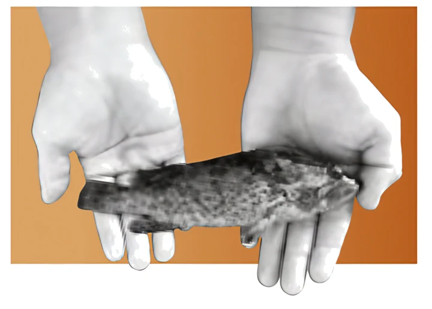
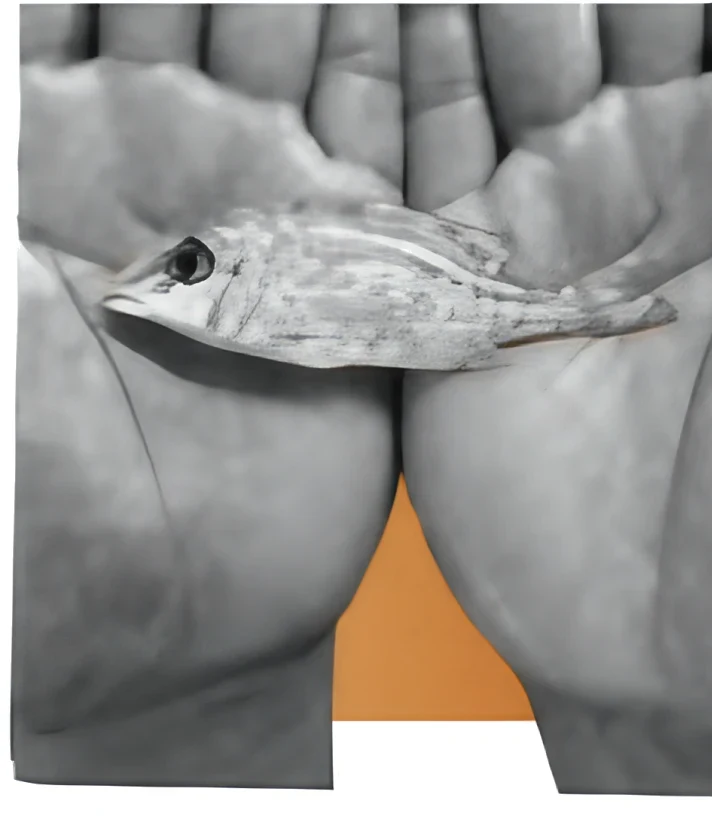
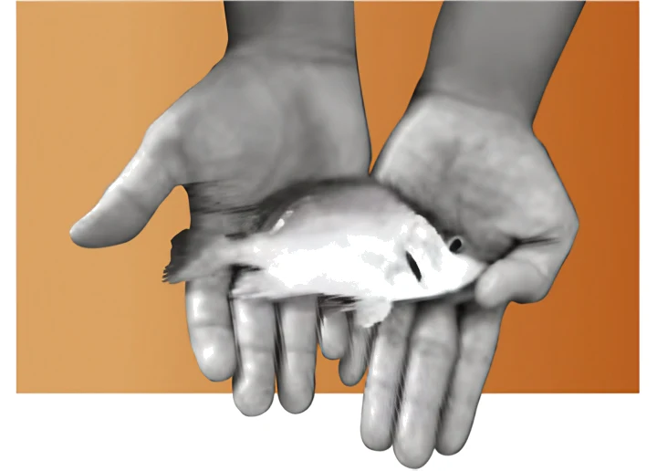

Grouper
HamourA high-value, slow-growing species prized in regional cuisine.
Fry availabilityWe focus exclusively on native Gulf species — resilient, well-adapted, and ecologically appropriate.
Our core species:

A high-value, slow-growing species prized in regional cuisine.
Fry availability
A premium reef fish valued for its delicate flavour, strong market demand, and adaptability to warm-water aquaculture.
Fry availability
A hardy and fast-growing species ideal for sea cage culture.
Fry availabilityAt Gulf Aquaculture, we believe meaningful sustainability starts with knowing what thrives here — not just what sells. Our approach is rooted in science, shaped by local conditions, and designed to benefit both ecosystems and economies.
We don’t adapt species to our systems. We build systems around our species.
Our work begins with a profound understanding of native Gulf species — their biology, behaviour, and breeding cycles. Species like Hamour and Red Snapper are not only valuable to the market — they’re naturally suited to our environment.
This knowledge allows us to:
Rather than replicate global models, we’ve designed our hatchery and nursery systems to reflect what’s needed — and nothing more. This minimalist approach results in: